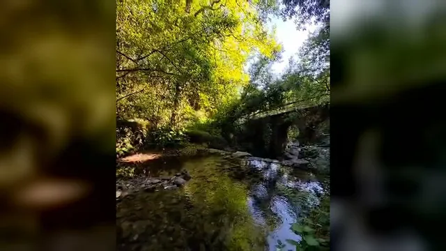
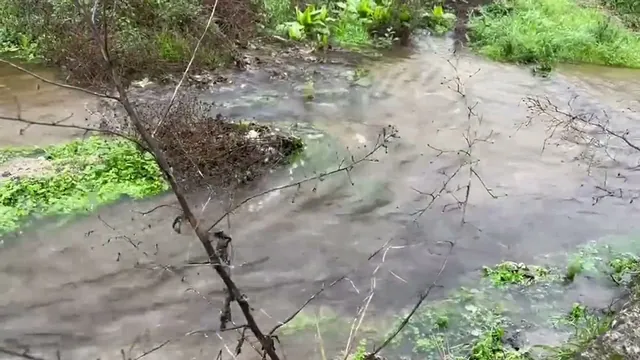
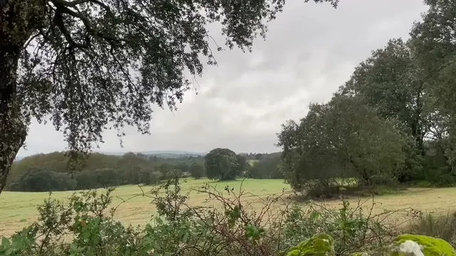

1:00:00
1:00:00
Videos
Relaxing with Cayus: one hour of real nature sound, recorded outdoors, for sleep, study or a slow evening. Each one has a short version too.
1:00:00

1:00:00Old Stone Bridge by the River
Gentle river water under an old bridge, with ducks nearby.

1:00:00Gentle Forest Stream
Calm water running through the woods.

1:00:00Dripping Oak After the Rain
Raindrops falling from an old oak over a quiet meadow.
Open the Relaxing with Cayus channel
Looking for songs and dances for kids? Visit Waddle Hop Pals.